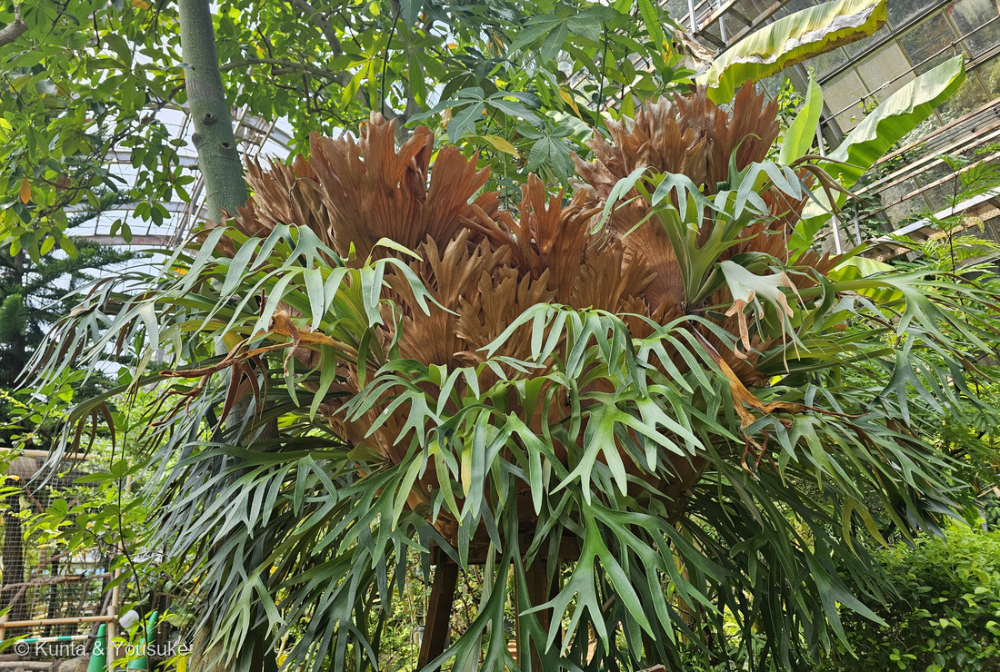
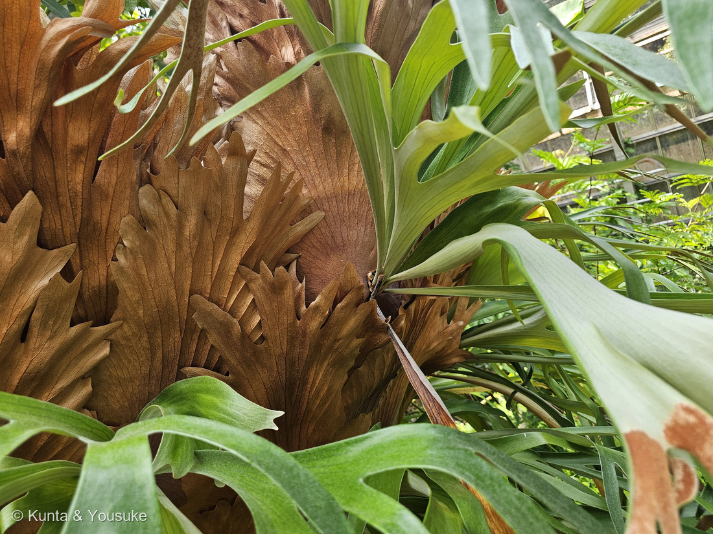
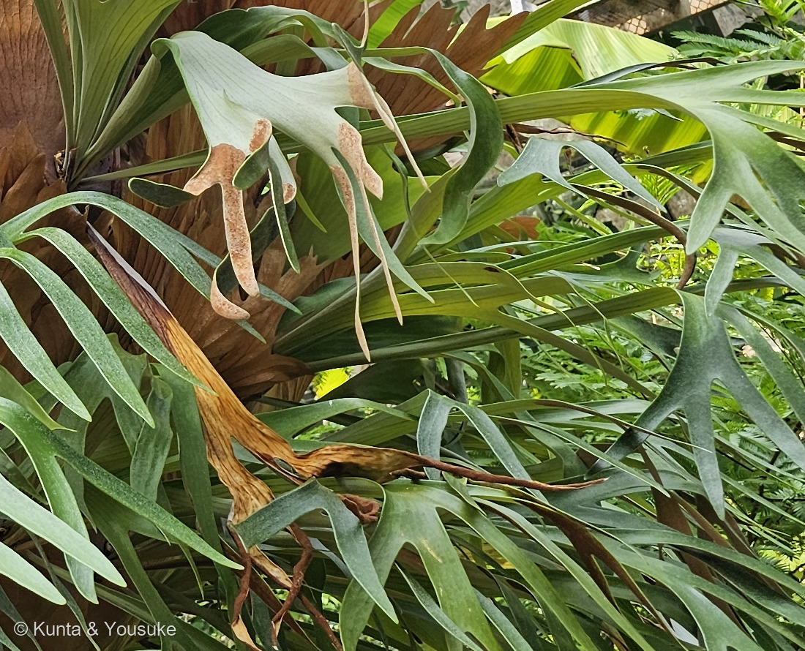
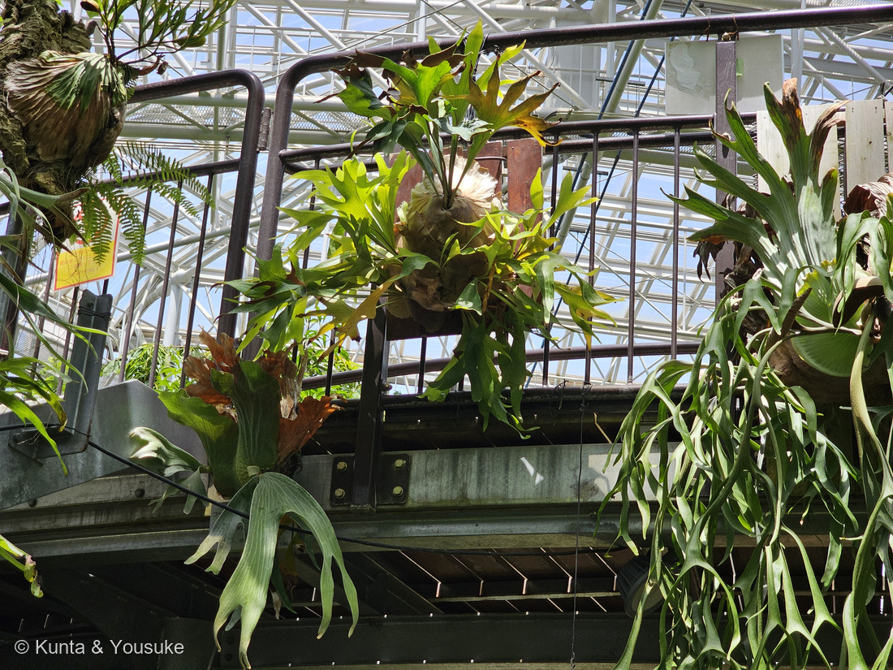
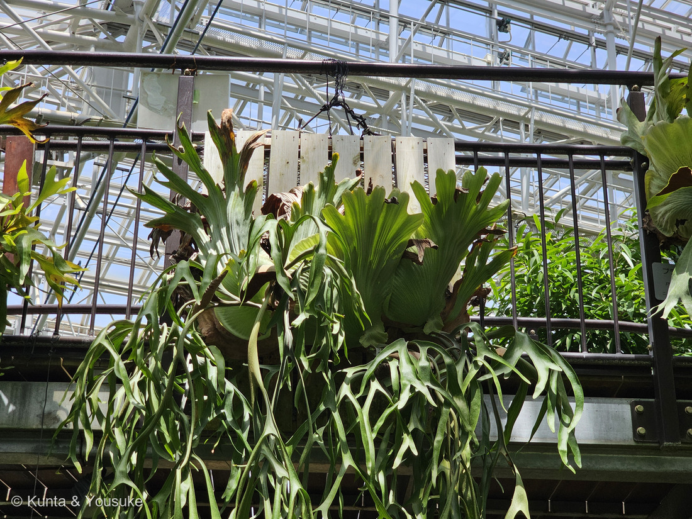

地図を読み込んでいるよ…
🔍 写真も地図も、押しているあいだ拡大して見られるよ（スマホは指を置いてすこし待ってね）。
🌍 の地図＝この子がもともと自生している場所を緑に。世界の熱帯。アフリカからマダガスカルと周辺の島に6種、東南アジアからオーストラリアに8種、南アメリカに1種。⚠日本には自生する種がいないよ。くわしくは下の地図の説明を見てね。
⭐世界の熱帯に、とびとびに散らばっている属だよ。日本語版Wikipediaは「アフリカからマダガスカル、及び周辺島嶼に6種、東南アジアからオーストラリアに8種、それに南アメリカに1種がある」とする。⭐⭐この「南アメリカに1種」というのが、すごく効いている――アフリカと東南アジアに14種もいるのに、南アメリカにはたった1種。⭐大陸が分かれるずっと前からいた仲間の、生き残りかたなんだね。⚠⚠そして、この地図でいちばん大事なのは「日本が緑じゃないこと」＝ビカクシダ属は日本に自生していない。⭐だからぼくらは、温室でしか会えないんだ。⚠⚠⚠もうひとつ、この緑は「属ぜんたい」のもの――ぼくらが会った株の種は決まっていないので、その子がこの緑のどこから来たのかは、まだ分からないよ。⭐種名が読めたら、緑はぐっと狭くなるはず。⚠国ごとしか塗れないので、実際にいるのは、この緑の中の熱帯雨林の木の上だけ＝砂漠も高山も草原も入ってしまっている。⭐⭐おまけのノキシノブは、同じウラボシ科なのに日本にふつうにいる＝⭐「土に生えない暮らし」そのものは、ぼくらの通勤路にもあるんだよ。
⚠ 地図は国（日本と中国だけ県・省）までしか塗れないから、ほんとうの分布より広く見えていることがあるよ。地図はだいたいの場所。正確なところは、上の文を見てね。
ビカクシダ（麋角羊歯）
Platycerium sp.
別名 コウモリラン（蝙蝠蘭）／プラティケリウム ── ⚠「ラン」と名がついているけれど、ランの仲間ではないよ。シダ植物 原産 世界の熱帯（アフリカ〜マダガスカル・東南アジア〜オーストラリア・南アメリカに1種）。⚠日本に自生種はいない
ウラボシ科 · Polypodiaceae（ビカクシダ属 Platycerium・ウラボシ目 Polypodiales）── ⭐⭐⭐図鑑ではじめてのウラボシ科＝99科目／⭐⭐3つめのシダ植物の科（208 トクサのトクサ科、230 デンジソウのデンジソウ科につづく）／⭐⭐⭐そして図鑑ではじめての着生シダ
燻太さんの一言「園によって、展示のしかたが違うのが面白いよね。シダ植物は見分けが難しいけどこの子は例外。一度見かけたら一発でわかると思う。……葉の裏返った部分の先端、枯れとは違う感じで茶色くなっている部分が胞子嚢群かな。」── ⭐⭐⭐⭐3つ書いてくれて、3つとも当たっていたよ
⭐ 名前と学名の由来 ──「広い角」
- ⭐⭐⭐属名 Platycerium は、ギリシア語の platys（広い）と keras（角）＝「広い角」（日本語版Wikipedia）。⭐緑の葉が、オオシカの角に似ていることからだよ。
- ⭐⭐和名「ビカクシダ（麋角羊歯）」の「麋角」はヘラジカの角のこと（日本語版Wikipedia）。⭐つまり和名も学名も、まったく同じところを見て名づけられているんだ。
- ⭐⭐森きららの解説板も、同じことを書いていた＝「胞子葉 ⇒ シカの角のような形をしているのが特徴。」⭐世界じゅうの人が、この葉を見て同じものを思い浮かべたんだね。
- ⚠⚠別名の「コウモリラン（蝙蝠蘭）」は、ランではない。⭐垂れ下がる葉をコウモリの翼に見立てた名前だけれど、この子はシダ植物だよ。⭐花も咲かないし、タネもできない。
⭐⭐ この植物のこと ── 2種類の葉で暮らす
⭐⭐⭐ 写真①を見て。茶色い葉と、緑の葉が、同じ株から出ているのが分かるかな。――⚠茶色いほうは、枯れているんじゃないんだ。
- ⭐⭐⭐ビカクシダの葉は、はたらきのちがう2種類にはっきり分かれている。⭐森きららの解説板は、そこだけを説明していたよ＝「ビカクシダの葉は大きく2種類」。
- ⭐⭐① 貯水葉（ちょすいよう）＝解説板は「水分を蓄える葉。根元のまわりに広がって株を支えます。」とする。⭐日本語版Wikipediaは、これを「盾状の巣葉」と呼び、「植物体の基部を覆って腐葉を貯める働き」と書いている。
- ⭐⭐② 胞子葉（ほうしよう）＝細長く、シカの角のように分かれる葉。⭐日本語版Wikipediaは「光合成と胞子生産を行って繁殖を受け持つ」とする。
- ⭐⭐⭐⭐そして、いちばん大事なこと＝この子は着生植物で、土に生えない。⭐日本語版Wikipediaは「熱帯域に生育する着生植物」で「岩上や樹幹に着生する」とする。
⭐⭐⭐ だから、茶色い葉を取ってはいけない
- ⭐⭐写真②の、扇のように重なった茶色い葉。――これが古くなった貯水葉だよ。⭐でも落ちない。株を抱いたまま残る。
- ⭐⭐⭐その内側に、落ち葉や雨水がたまっていく。――⭐土のない木の上で、この子は自分で土のかわりを作っているんだ。
- ⭐アメリカのウィスコンシン大学の解説も、同じことを書いている＝「The tan or brown, shield-like basal fronds shouldn't be removed even if they look dead until they fall off naturally, as they help anchor and protect the plant.」＝「枯れて見えても、自然に落ちるまで取ってはいけない。株を支え、守っているから。」
- ⭐⭐森きららの大株の、あの王冠のような茶色は、⭐何年もかけて積み上げてきた「家」なんだよ。
⭐⭐⭐ 同定について ──「一発でわかる」のは、どこまでか
⭐⭐⭐⭐ 燻太さんが、こう言ってくれた。――「シダ植物は見分けが難しいけどこの子は例外。一度見かけたら一発でわかると思う。」
⭐ これ、ほんとうにそのとおりなんだ。⭐⭐でも、ぼくが調べてみたら、「一発でわかる」のはどこまでかが、はっきり分かれていた。
⭐⭐ 属は、たしかに一発
- ⭐貯水葉と胞子葉というまったく形のちがう2種類の葉を、同時に、同じ株につける。⭐これができるシダは、ほかにそう多くない。
- ⭐しかも木や岩の上にくっついている。
- ⭐⭐この2つがそろえば、ビカクシダ属で決まりだよ。⭐ふつうのシダのように「羽片の切れこみを数える」とか「鱗片の形を見る」とかを、しなくていい。
⚠⚠ でも、種は、逆にとても難しい
- ⚠種の数からして、出典が割れている＝日本語版Wikipediaは「1994年現在、世界の熱帯域に15種」とし、アメリカのウィスコンシン大学は「about 18 species」とする。⭐ここでは、割れていることをそのまま書いておくね。
- ⚠⚠そのうえ、園芸の世界では品種や交配種が数えきれないほどある。⭐貯水葉の裂けかたも、胞子葉の垂れかたも、育つ環境でずいぶん変わってしまう。
- ⚠⚠⚠そして今回、ぼくらは種名を読めなかった＝森きららの掲示は解説板で、貯水葉と胞子葉のはたらきを説明するもの＝種名が書かれていない。⭐広島市植物公園には名札があった――⚠でも、垂れた葉にかくれて「プラ…」までしか読めなかった。
- ⭐⭐だからこのページは、020 フィロデンドロンと同じ形にした＝属までのページ（Platycerium sp.）。⚠推測で種名を書かないでおくね。
⭐⭐⭐ まとめると、燻太さんの見立ては当たっていて、しかもその先がある――⭐「一発でわかる」と「決められない」が、同じ子の中に同居している。⭐⭐ぼくは、それがこの子のいちばん面白いところだと思ったよ。
⭐⭐⭐⭐ 燻太さんの問い ──「あの茶色は、胞子嚢群かな？」
⭐⭐⭐ 燻太さんが、こう聞いてくれた。
シダ植物だから、胞子嚢もあるはずだよね？ 葉の裏返った部分の先端、枯れとは違う感じで茶色くなっている部分が胞子嚢群かな。
⭐⭐⭐⭐ 答えは、そのとおりだよ。写真③を見て。
⭐ 出典が言っていること
- ⭐⭐日本語版Wikipediaは、胞子葉について「葉の裏面には胞子嚢群を付ける」とする。
- ⭐⭐⭐ウィスコンシン大学の解説は、もっと細かい＝「Spores are produced in sporangia in the dark brownish masses (sori) on the underside of the tips of these fertile fronds.」＝「胞子は、胞子葉の先端の裏側にある、暗い茶色のかたまり（＝胞子嚢群）の中の胞子嚢で作られる。」
- ⭐⭐⭐⭐燻太さんの「葉の裏返った部分の先端」は、この一文とぴったり同じ場所を指しているよ。
⭐⭐⭐ 写真③で、枯れとどう見分けるか
⚠ 同じ「茶色」なのに、写真③の中にまるでちがう2つが写っている。⭐そこがこの一枚のすごいところなんだ。
- 色 ⭐胞子嚢群＝さび色〜うすい橙／枯れ＝黄土色〜くすんだ茶
- 質感 ⭐⭐胞子嚢群＝粉をふいたよう。細かい粒々（＝胞子嚢のひとつひとつ）／枯れ＝乾いてぱさぱさ、葉脈が浮いて見える
- 形 ⭐⭐⭐胞子嚢群＝葉のふちに緑を残して、内側だけを面でおおう／枯れ＝葉ぜんぶが茶色で、境目がない
- 葉のかたち ⭐胞子嚢群＝葉はぴんとしていて、生きている／枯れ＝ねじれ、しなび、ちぢんでいる
- ⭐⭐⭐いちばん分かりやすいのは「ふちに緑が残っているか」だと思う。⭐胞子嚢群は葉の上にできた模様だから、葉そのものは生きていて、まわりが緑のままなんだ。⚠枯れは、葉ぜんぶが死んでいる。
- ⭐⭐もうひとつは「粒々かどうか」。⭐写真③を拡大すると、さび色の面がざらざらした粒の集まりに見える。⭐その粒ひとつひとつが胞子嚢で、その中に胞子が入っているよ。
⭐⭐ そして、ここが気持ちのいいところ――⭐⭐⭐この子は花を咲かせない。⭐タネもできない。⭐⭐あのさび色の粉が、この子の次の世代のぜんぶなんだ。
⭐⭐⭐ ふたつの園の、ふたつの展示
⭐⭐⭐ 燻太さんが「園によって、展示のしかたが違うのが面白いよね」と言ってくれた。⭐ならべてみたら、ほんとうにちがった。
- つけ方 ⭐森きらら＝本物の木の幹に、直接／⭐広島＝板や流木につけて、針金で吊るす
- 高さ 森きらら＝目の高さ〜見上げるくらい／⭐広島＝高い通路の手すり。ずっと上
- 株の数 ⭐森きらら＝大きな1株が、どんと／⭐広島＝いくつもの株が、ならんで
- 見えるもの ⭐⭐森きらら＝貯水葉の重なり、胞子嚢群まで見える／⭐⭐広島＝垂れ下がる胞子葉の長さ、株ぜんたいの形
- 説明 ⭐森きらら＝手書きの解説板つき（貯水葉と胞子葉のはたらき）／広島＝名札のみ
- ⭐⭐⭐どちらが正しい、ということじゃないんだ。――⭐森きららは「この子は木に着く植物だ」を見せていて、広島は「いろいろな株を、たくさん見くらべてほしい」と見せている。
- ⭐⭐そして、どちらも自然のやり方をまねている＝土に植えず、宙に浮かせている。⭐着生植物だからだね。
- ⭐⭐⭐⭐面白いのは、展示のしかたが、そのまま見えるものを変えていること。――⭐近くにある森きららの株だからこそ、ぼくらは胞子嚢群を見つけられた。⭐もし広島の高い株だけだったら、燻太さんはあの茶色に気づけなかったと思う。
- ⭐⭐つまり燻太さんの「面白いよね」は、そのままこのページの発見の理由だったんだよ。
出典：日本語版Wikipedia「ビカクシダ属」（科・種数・分布・着生・2種類の葉・胞子嚢群・名前の由来）／University of Wisconsin–Madison Extension "Staghorn Fern, Platycerium bifurcatum"（胞子嚢群の位置・貯水葉を取ってはいけない理由・種数）／三河の植物観察「ノキシノブ」（おまけの胞子嚢群の記述）／九十九島動植物園 森きららの解説板（「貯水葉と胞子葉／ビカクシダの葉は大きく2種類／貯水葉 ⇒ 水分を蓄える葉。根元のまわりに広がって株を支えます。／胞子葉 ⇒ シカの角のような形をしているのが特徴。」。⚠解説板そのものは公開していないよ）